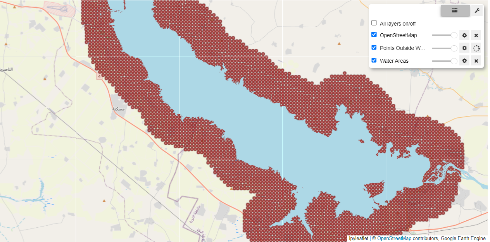

Drought Analysis#
Request#
Using NASA remote sensing data, prepare historical drought analysis for Syria and bordering countries. Estimate hectares of farmland where drought has occurred over the past 5 years.
Drought Index#
There are several drought indices in the literature, the majority of them look a trends in rainfall and temperature to identify droughts at different time intervals. We use the Standardised Precipitation-Evapotranspiration Index (SPEI)
SPEI#
The SPEI is an extension of the widely used Standardized Precipitation Index (SPI). The SPEI is designed to take into account both precipitation and potential evapotranspiration (PET) in determining drought. Thus, unlike the SPI, the SPEI captures the main impact of increased temperatures on water demand.
The idea behind the SPEI is to compare the highest possible evapotranspiration (what we call the evaporative demand by the atmosphere) with the current water availability. Thus, precipitation (accumulated over a period of time) in the SPEI stands for the water availability, while ETo stands for the atmospheric water demand.
Time Scales#
The SPEI can measure different types of drought (levels of severity and duration) depending on the time timescale factor. At the shortest time scales (3/6 months) the drought series show a high frequency of drought, and moist periods of short duration. In contrast, at the longest time scales (12/18 months) the drought periods are of longer duration and lower frequency.
Interpretation#
Negative SPEI values represent rainfall deficit and high potential epotranspiration (dry conditions), starting when the SPEI value is equal or below -1.0. Whereas positive SPEI values indicate rainfall surplus and low potential epotranspiration (wet conditions), starting when the SPEI value is equal or above 1.0.
Maps of Monthly SPEI (6-month window)#
Each row in this panel of maps is a year, and each column is a month. Red values signify dry conditions (drought), and blue values signify wet conditions.
The Global SPEI Database only contains data up to 2022. The authors also provide less accurate but real-time data through the SPEI Global Drought Monitor. In the maps below, we show the progression of SPEI for 2023 and 2024, using the coarser (1 degree resolution) real-time data.
An important difference between the data sources is that the SPEI Global Drought Monitor is based on the Thortnthwaite equation for estimating potential evapotranspiration, PET. This is due to the lack of real-time data sources for computing more robust PET estimations which have larger data requirements.
Trend of SPEI (6-month) in Syria#
The chart below shows the historical trend in SPEI 6-month from 2016 to 2023 using the median value.
{kind=link}
Trend of SPEI (12-month) in Syria#
{kind=link}
Monthly Rainfall Trends#

Detecting Water Bodies in Syria#
